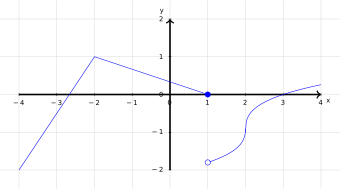
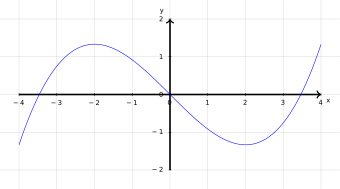

Consider \(f(x)=x^2-3x+2\).
For \(a=0,1,2,3\), compute \(f'(a)\).
For \(a=0,1,2,3\), plot \((a,f'(a))\).
What do you notice?
Consider \(f(x)=x^2-3x+2\).
Evaluate and expand \(f(x+h)\).
Compute \(f(x+h)-f(x)\).
Compute \(\displaystyle\lim_{h\to 0}\frac{f(x+h)-f(x)}{h}.\) The result should be an \(x\) expression.
For any function \(f(x)\), the derivative of \(f\) with respect to \(x\) is denoted: \[\frac{d}{dx}f(x)=f'(x):=\lim_{h\to 0}\frac{f(x+h)-f(x)}{h}.\]
For a constant \(a\) we say \(f(x)\) is differentiable at \(a\) if \(f'(a)\) exists. For an interval \(I\), \(f(x)\) is differentianle over \(I\) if \(f'(a)\) exists for each \(a\) in I.
Consider \(g(x)=|x|\).
Is \(g(x)\) differentiable when \(x>0\)?
Is \(g(x)\) differentiable when \(x<0\)?
Is \(g(x)\) differentiable when \(x=0\)?
Describe \(g'(x)\). (Probably a piecewise function, maybe not defined everywhere).
Consider \(h(t)=\begin{cases} -1 & t\leq 0 \\ 1 & t>0\end{cases}\).
Find \(\displaystyle \lim_{c\to 0^-} \frac{h(0+c)-h(0)}{c}\).
Find \(\displaystyle \lim_{c\to 0^+} \frac{h(0+c)-h(0)}{c}\).
What is \(h'(0)\)?
Describe \(h'(t)\). (Probably a piecewise function, maybe not defined everywhere).
Consider \(h(t)=\begin{cases} -1 & t\leq 0 \\ 1 & t>0\end{cases}\).
Which of the the following are reasons \(f'(a)\) is not defined?
Consider the graph \(y=\alpha(x)\).

Where is \(\alpha(x)\) differentiable?
Consider the graph \(y=f(x)\).

Where is \(f'(x)>0\)?
Consider the graph \(y=f(x)\).
Where is \(f'(x)>0\)?
Where is \(f'(x)<0\)?
Consider the graph \(y=f(x)\).
Where is \(f'(x)>0\)?
Where is \(f'(x)<0\)?
Where is \(f'(x)=0\)?
Consider the graph \(y=f(x)\).
Sketch \(y=f'(x)\).
Let \(g(z)=\frac{2}{3z+1}\), compute \(g'(z)\) using the limit definition.
(Both \(g(z+h), g(z)\) are rational expressions. Put them under a common denominator when you take the difference.)
Let \(k(x)=\sqrt{3-x}\), compute \(k'(x)\) using the limit definition.
\(\left(\frac{\sqrt{a}-\sqrt{b}}{c}=\frac{\sqrt{a}-\sqrt{b}}{c}\cdot \frac{\sqrt{a}+\sqrt{b}}{\sqrt{a}+\sqrt{b}}=\frac{a-b}{c(\sqrt{a}+\sqrt{b})}.\right)\)